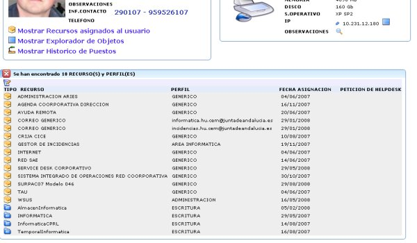

Capturas de pantalla
A continuación se muestran algunas capturas de pantalla del aplicativo TAU.INVENTARIO: Ficha de Equipo y componentes que lo rodean
INVENTARIO: Explorador de objetos

INVENTARIO: Vista en árbol del Explorador de objetos

INVENTARIO: Ubicación física de equipos

INVENTARIO: Gestión de Direcciones IP
INVENTARIO: Historico de equipo

Ficha de Usuario y equipos que lo rodean
INVENTARIO: Explorador de objetos
INVENTARIO: Aplicaciones y perfiles asociados al usuario
INVENTARIO: Ficha Aplicación con Perfiles y Usuarios

INVENTARIO: Direcciones IPs asociadas a la aplicacion

INVENTARIO: Grupos de autorización de acceso
INVENTARIO: Generación de hoja de autorización
INVENTARIO: Ficha extensión telefónica

INVENTARIO: Generación de Listín Telefónico
INVENTARIO: Alta de avería
INVENTARIO: Averias pendientes de cierre

INVENTARIO: Informe de parte de avería

CONTACTOS: Búsqueda de un contacto
BIBLIOTECA CD: Búsqueda de CD de drivers por árbol

MENSAJERIA: Redacción de una llamada perdida
INVENTARIO: Descuento de un toner por sustitución

INVENTARIO: Estado de un pedido
INVENTARIO: Ficha de fungible
INVENTARIO: Estado del almacén

W2000LDAP: Ficha Usuario directorio activo
W2000LDAP: Plantilla de creación automática

W2000LDAP: Localización del usuario

CONTROL REMOTO: Acceso por control remoto a equipo
HELPDESK: Portal de incidencias para usuarios

HELPDESK: Aceso a Zentrack integrado con TAU

CONEXION RDP: Conexión Terminal Server
REALWMI: Datos en tiempo real de un equipo
REALWMI: Procesos corriendo en el equipo

NOTIFICACIONES: Creación de mensaje

NOTIFICACIONES: Edición de mensaje HTML a partir de plantilla

NOTIFICACIONES: Estado de mensajes pendientes de visualizar

PANELES: Uso de los módulos a la vez